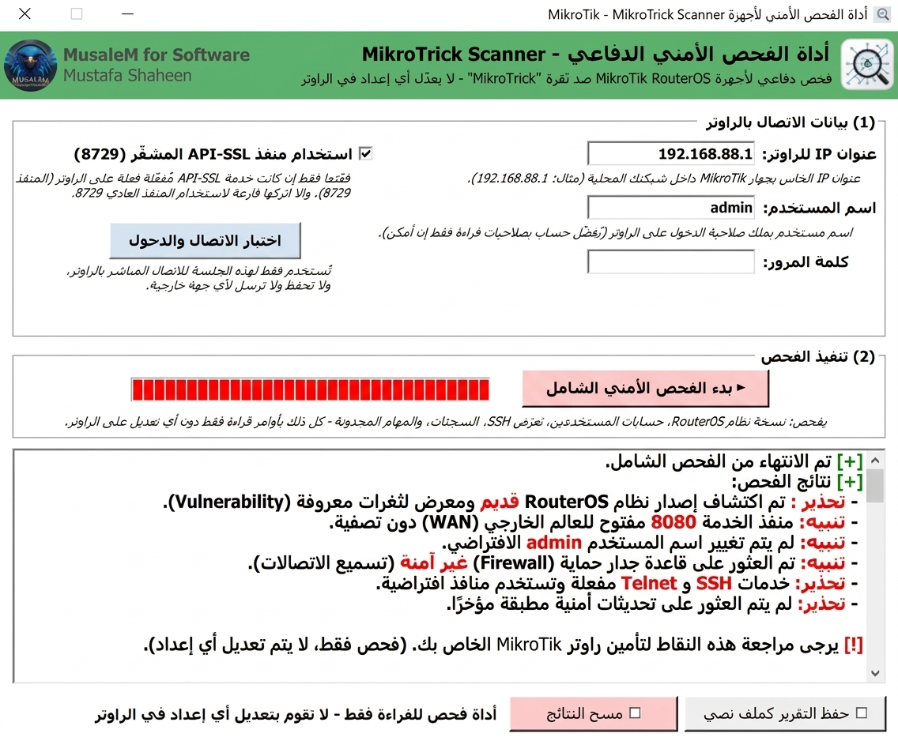

فاحص MikroTrick
أداة الفحص الأمني الدفاعي — تتحقق من تعرّض راوترك لثغرة MikroTrick الحرجة وتساعدك على تأمينه بسرعة
نبذة عن الأداة
برنامج فحص أمني دفاعي لأجهزة MikroTik يساعدك على اكتشاف تعرّض راوترك لسلسلة ثغرات MikroTrick الحرجة، من خلال فحص إصدار RouterOS الحالي، ومراجعة إعدادات وصول SSH، والتنبيه على أي مؤشرات دخول مشبوهة — كل ذلك في تقرير واضح وسريع يساعدك تتخذ القرار الصح فورًا.
أبرز الميزات
تفاصيل الثغرة (MikroTrick)
ثغرة MikroTrick عبارة عن سلسلة من 6 ثغرات في RouterOS، أخطرها اثنتان تعملان معًا لتمكين المهاجم من التحكم الكامل في الراوتر دون الحاجة لأي مصادقة (Authentication).
ثغرة تخطي مصادقة في SSH، سببها أن RouterOS كان يقارن جزءًا فقط من مفتاح RSA العام (الـ modulus) بدل المفتاح كاملًا، مما يتيح للمهاجم تزوير مفتاح مختلف والدخول بحساب مستخدم موجود دون امتلاك المفتاح الخاص الأصلي.
ثغرة رفع صلاحيات، حيث يستخدم المهاجم اسم مستخدم "مُصنَّع" يبدأ بحرف غير مسموح به لخداع النظام ومنح الجلسة صلاحيات Admin كاملة.
الإصدارات المصحَّحة
- RouterOS 7.24.2 (Stable)
- RouterOS 7.23.4 (Long-term)
- RouterOS 6.49.21 (Long-term)
- RouterOS 7.25beta3
إيه اللي لازم تعمله فورًا
إذا كنت تدير أجهزة عملاء، تعامل مع هذه المشكلة كأولوية قصوى — فهي مصنّفة Critical.
لقطة من الأداة
